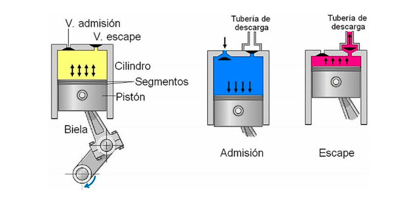
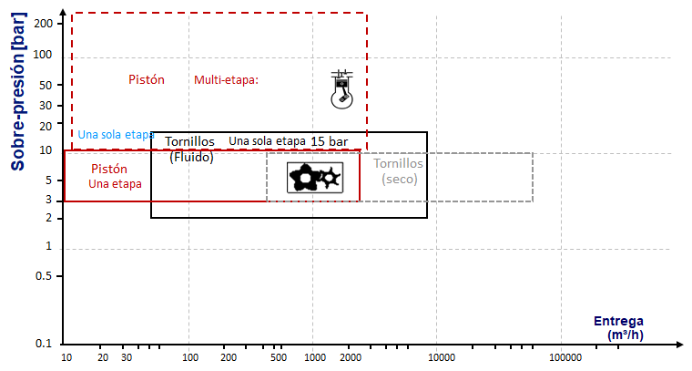
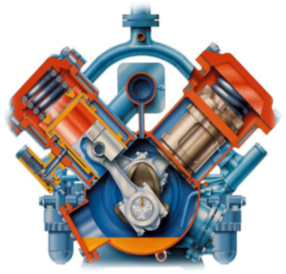
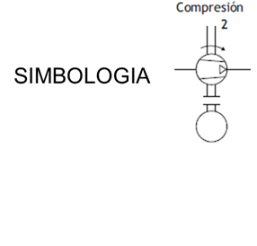
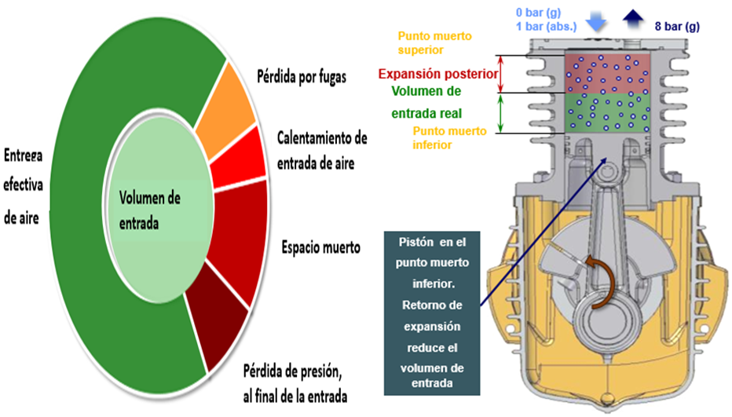

Compresor de Piston
Son máquinas de desplazamiento positivo, lo que significa que aumentarán la presión del aire mediante la reducción de su volumen.
El compresor garantiza al sistema un flujo constante de aire a presión.
Es recomendable intentar alcanzar un grado de aprovechamiento del compresor del orden de 75%. Con ese fin deberá determinarse correctamente el consumo promedio y máximo de aire en el sistema neumático y a continuación, elegir el compresor que corresponda a dichos valores
En este tipo de compresores, el aire es aspirado al interior de un cilindro, por la acción de un pistón accionado por una biela y un cigüeñal. Ese mismo pistón, al realizar el movimiento contrario, comprime el aire en el interior del mencionado cilindro, liberándolo a la red o a la siguiente etapa, una vez alcanzada la presión requerida.
Son adecuados para trabajar a alta presión y pueden ser exentos de aceite o lubricados por aceite
Los compresores de émbolo comprimen el aire que entra a través de una válvula de aspiración (admisión). A continuación, el aire pasa al sistema neumático a través de válvula de escape (descarga). Los compresores de émbolo son los utilizados con más frecuencia porque su gama cubre un amplio margen de presiones. Para generar presiones elevadas se recurre a un sistema escalonado de estos compresores (con etapas sucesivas). En ese caso, el aire debe ser enfriado entre cada una de las etapas de compresión
Las presiones óptimas para los compresores de émbolo son las siguientes:
Hasta (10 bar) Una etapa
Hasta (35 bar) Dos etapas con enfriamiento intermedio

|  |  |  |
